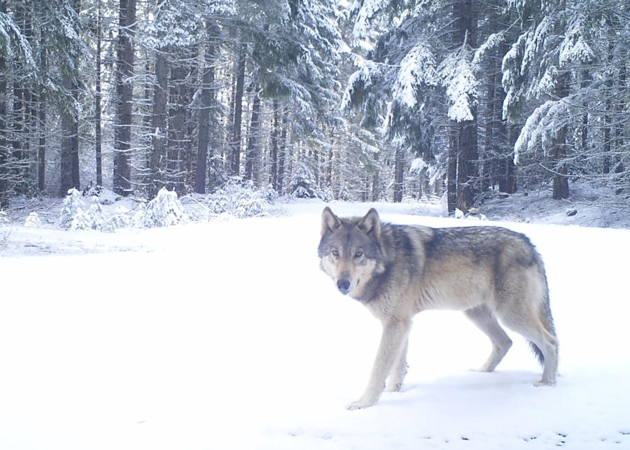

Imageomics Institute Director, Prof. Tanya Berger-Wolf will led the AI and Biodiversity Change (ABC) Global Climate Center, a new multimillion dollar international center that will use artificial intelligence to help researchers understand the impacts of climate change on biodiversity. The Center will bring together ecologists and computer scientists from six universities in the United States and Canada, with partners in UK, Europe, and Australia.